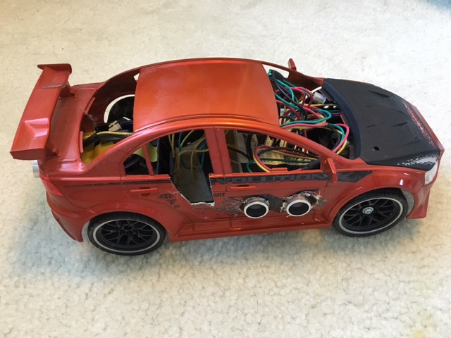
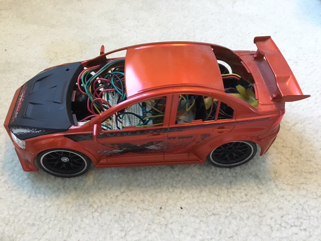

This is a rudimentary collision avoidance system for miniature cars that I created for a Science Fair project. I used an Arduino to monitor 3 ultrasonic sensors while simultaneously controlling the miniature car's rear drive motor and steering motor. I designed the collision avoidance system to avoid both head on collisions and rear end collisions. My final iteration of the car performed as follows:
When anticipating a head on collision:
If there were no obstructions to the right of the car, the collision avoidance system would steer right while braking.
If there was an obstruction to the right of the car, as is often such on bridges or two lane highways with railing, then the collision avoidance system would just aggressively brake.
When anticipating a rear end collision:
If there were no obstructions in front of the car, the collision avoidance system would move forward.

